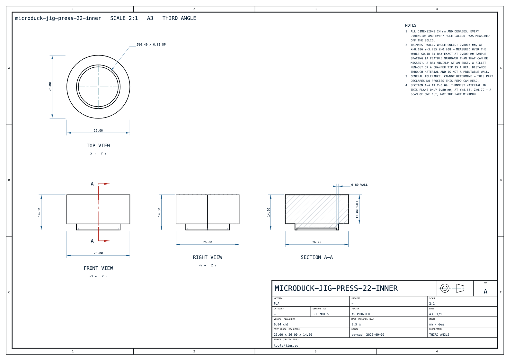
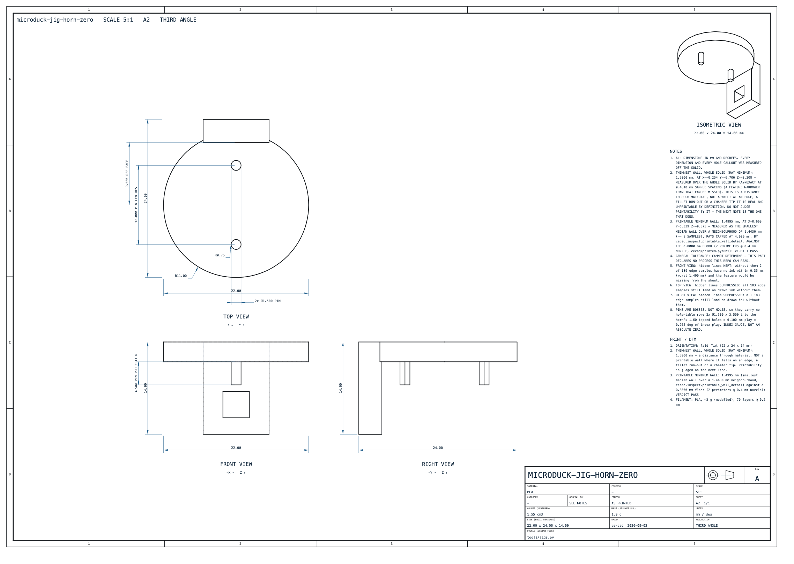

Microduck reverse-engineering · production
The document the line executes: process per part, DFM finding per part, print profiles, station-by-station assembly with jigs and torque, QA gates, and pack-out.
tools/gen_playbook.py
This is the document a shop executes. Every number in it is either the slicer's own output, a measurement taken off the geometry, or a figure quoted from a named source — and where none of those exist the row says CANNOT DETERMINE and names the test that would settle it. No default has been substituted for a missing value anywhere in this file.
result.json figures through
ce-slice, never derived from volume [SLICE].
Overhang and wall are measured off the exact STL that was sliced, by
tools/measure_dfm.py [DFM] — ce-cad has no overhang tool, and
cecad.printed.printability says in as many words that it "does not guess at
overhangs", so §3 is the measurement that was missing.
Costs are computed here from those numbers against the rate brackets in §2.1;
change a rate in tools/data/playbook.json and every table below moves.Print or mould is not one decision, it is thirty. Each part has its own piece cost and its own tool cost, so each has its own break-even quantity — and for most of this robot that quantity does not exist, because the printed piece already costs less than the cheapest end of the sourced moulded piece price.
| term | bracket | basis | source |
|---|---|---|---|
| material, PLA | $24.00/kg × 1.10 waste | retail spool; the waste factor is the model's own | [LM3] [CC] |
| material, TPU | $44.00/kg × 1.10 waste | retail spool | [LM3] [CC] |
| material, farm stock | $10.00/kg PLA | what a 1000-printer farm buys at | [SL] |
| machine-hour, in-house | $0.10–0.31/h | wear (printer price ÷ 5,000 h) + power | [CC] [LM1] |
| machine-hour, bought | $2.00–4.00/h | what a farm charges for a print hour | [LM2] [PR2] [GC] |
| labour | $5.00 per print job | CC's figure is 15 minutes hands-on PER PRINT, and a plate IS one print. Per-piece labour is therefore $5.00 / (pieces on the plate) when plated, and $5.00 when a part is printed alone. | [CC] |
| moulded piece | $0.50–5.00 | aluminium tool, small part, vendor bracket on unlike parts | [HT] |
| tool | $1495 floor; $2–1 aluminium | one cavity set per slug; mirrored pairs cannot share | [PL1] [HT] [PL4] |
| failure buffer | ×1.10–1.30 | prints that do not finish | [CC] [GC] |
docs/production/process.md §9 item 1). That is now closed: all 36 pieces have
been sliced for real [SLICE], so the machine-hour term below is measured and not modelled, and
the break-even arithmetic can finally be done on this robot rather than on a vendor's
example knob.| line | value | how |
|---|---|---|
| filament, sliced | 244.50 g over 36 pieces | BambuStudio result.json, per piece × qty [SLICE] |
| printer time, sliced | 12.35 h | sequential per-piece prints; a plate prints faster than the sum [SLICE] |
| material | $7.03 | PLA at $24/kg, TPU at $44/kg, ×1.10 waste |
| machine, in-house | $1.23–$3.83 | 12.35 h × $0.10–0.31/h |
| labour, plate-batched | $10.00 | two plates per robot × 15 min hands-on at $20/h [CC] |
| printed parts per robot, in-house | $20.09–$27.12 | the three lines above × the 1.10–1.30 failure buffer |
| printed parts per robot, bought from a farm | $28.36–$53.05 | 12.35 h × $2–4/h plus farm-stock filament; no labour term — it is the farm's |
N* = T / (cprint − cmould). cprint is the in-house mid-point computed from this part's own sliced grams and seconds plus its share of the plate's labour; cmould is the sourced $0.50–5.00 band [HT]; T is one cavity set. A dash in the break-even columns means there is none: the printed piece already costs less than the moulded one, so no tooling spend ever pays back. Sorted by piece cost.
| part | mat | g/piece | h/piece | material | machine | labour share | cprint | N* @ $1,495 tool | N* @ $10,000 tool | N* @ $5.00 piece |
|---|---|---|---|---|---|---|---|---|---|---|
microduck-jaw-soft visible | TPU | 8.8216 | 0.7442 | $0.4270 | $0.0744–$0.2307 | $1.2500 | $1.8295 | 1,124 | 7,521 | — |
microduck-sole-left visible | TPU | 7.0704 | 0.6937 | $0.3422 | $0.0694–$0.2150 | $1.2500 | $1.7344 | 1,211 | 8,101 | — |
microduck-sole-right visible | TPU | 7.0677 | 0.6920 | $0.3421 | $0.0692–$0.2145 | $1.2500 | $1.7339 | 1,212 | 8,104 | — |
microduck-soft-mouth-top visible | TPU | 3.2431 | 0.2811 | $0.1570 | $0.0281–$0.0871 | $1.2500 | $1.4646 | 1,550 | 10,367 | — |
microduck-top-head-shell visible | PLA | 34.6097 | 1.1463 | $0.9137 | $0.1146–$0.3553 | $0.1562 | $1.3049 | 1,857 | 12,423 | — |
microduck-bottom-head-shell visible | PLA | 28.2837 | 0.9878 | $0.7467 | $0.0988–$0.3062 | $0.1562 | $1.1054 | 2,469 | 16,517 | — |
microduck-power-support | PLA | 13.1477 | 0.6394 | $0.3471 | $0.0639–$0.1982 | $0.1562 | $0.6344 | 11,122 | 74,396 | — |
microduck-foot-left visible | PLA | 13.3514 | 0.5481 | $0.3525 | $0.0548–$0.1699 | $0.1562 | $0.6211 | 12,347 | 82,590 | — |
microduck-foot-right visible | PLA | 13.3526 | 0.5476 | $0.3525 | $0.0548–$0.1698 | $0.1562 | $0.6210 | 12,354 | 82,633 | — |
microduck-trunk-shell-left visible | PLA | 13.0364 | 0.4977 | $0.3442 | $0.0498–$0.1543 | $0.1562 | $0.6024 | 14,593 | 97,611 | — |
microduck-trunk-shell-right visible | PLA | 12.8237 | 0.4873 | $0.3385 | $0.0487–$0.1511 | $0.1562 | $0.5947 | 15,789 | 105,610 | — |
microduck-jaw visible | PLA | 10.8958 | 0.5328 | $0.2876 | $0.0533–$0.1652 | $0.1562 | $0.5531 | 28,138 | 188,212 | — |
microduck-motor-support | PLA | 9.1993 | 0.3513 | $0.2429 | $0.0351–$0.1089 | $0.1562 | $0.4711 | — | — | — |
microduck-ankle-left | PLA | 6.1845 | 0.3658 | $0.1633 | $0.0366–$0.1134 | $0.1562 | $0.3945 | — | — | — |
microduck-ankle-right | PLA | 6.1821 | 0.3650 | $0.1632 | $0.0365–$0.1132 | $0.1562 | $0.3943 | — | — | — |
microduck-face-part visible | PLA | 6.6397 | 0.2528 | $0.1753 | $0.0253–$0.0784 | $0.1562 | $0.3834 | — | — | — |
microduck-neck-pitch-bracket | PLA | 4.3782 | 0.3291 | $0.1156 | $0.0329–$0.1020 | $0.1562 | $0.3393 | — | — | — |
microduck-yaw-roll-motion | PLA | 4.7084 | 0.2592 | $0.1243 | $0.0259–$0.0803 | $0.1562 | $0.3337 | — | — | — |
microduck-upper-leg-right | PLA | 4.6678 | 0.2558 | $0.1232 | $0.0256–$0.0793 | $0.1562 | $0.3319 | — | — | — |
microduck-upper-leg-left | PLA | 4.6681 | 0.2545 | $0.1232 | $0.0255–$0.0789 | $0.1562 | $0.3317 | — | — | — |
microduck-hip-bracket | PLA ×2 | 3.8126 | 0.2964 | $0.1007 | $0.0296–$0.0919 | $0.1562 | $0.3177 | — | — | — |
microduck-shin | PLA ×2 | 3.5999 | 0.2414 | $0.0950 | $0.0241–$0.0748 | $0.1562 | $0.3008 | — | — | — |
microduck-yaw2roll | PLA ×2 | 2.9568 | 0.2187 | $0.0781 | $0.0219–$0.0678 | $0.1562 | $0.2791 | — | — | — |
microduck-eye-ring visible | PLA | 2.7130 | 0.0978 | $0.0716 | $0.0098–$0.0303 | $0.1562 | $0.2479 | — | — | — |
microduck-trunk-base | PLA | 1.8239 | 0.0778 | $0.0482 | $0.0078–$0.0241 | $0.1562 | $0.2204 | — | — | — |
microduck-m12-lens-holder | PLA | 1.3982 | 0.1121 | $0.0369 | $0.0112–$0.0347 | $0.1562 | $0.2161 | — | — | — |
microduck-upper-leg-rigidity-plate | PLA ×2 | 1.0002 | 0.0565 | $0.0264 | $0.0057–$0.0175 | $0.1562 | $0.1942 | — | — | — |
microduck-bearing-roll | PLA ×2 | 0.8537 | 0.0454 | $0.0225 | $0.0045–$0.0141 | $0.1562 | $0.1881 | — | — | — |
microduck-banana-pcb-locker | PLA | 0.6794 | 0.0390 | $0.0179 | $0.0039–$0.0121 | $0.1562 | $0.1822 | — | — | — |
microduck-neck-plate | PLA ×2 | 0.5523 | 0.0353 | $0.0146 | $0.0035–$0.0109 | $0.1562 | $0.1781 | — | — | — |
docs/production/process.md §8 reached. Of 30 printed parts, 18 have no
break-even at all against the cheap end of the moulded piece price, and 30 have none
against the dear end — the printed piece is simply cheaper. Where a break-even does exist
it is 1,124 to 28,138 units at the Protolabs tool floor, and 7,521 to 188,212 units at the aluminium
ceiling. §8 of process.md recommended moulding the nine visible parts at 1,000 units; it made
that call with Σ hours marked CANNOT DETERMINE. With the hours measured, the arithmetic no
longer supports it at 1,000. What can still move those nine parts to a mould is
surface finish and throughput, not unit cost — and neither has a written acceptance
standard yet (§8).| units | decision | the arithmetic behind it |
|---|---|---|
| 1 | FDM in-house. PLA hard set, TPU soft set. | $20.09–$27.12 of printed parts against $44,850 of tooling for one cavity set per slug [PL1]. Nothing else is close. |
| 10 | FDM in-house, both plates batched. | Tooling would be $4,485 per robot. Cast the lips in silicone only if printed TPU fails the beak test [ML]. |
| 100 | FDM farm — own printers or a no-MOQ farm. Mould nothing. | 1234.563611111111 printer-hours for 100 robots. At the farm's own $28.36–$53.05 per robot the printed parts are still under 12 % of the bought cost. |
| 1,000 | Keep every part on FDM on cost. Re-open the nine visible parts on finish and throughput, not on price. | 12,346 printer-hours = a 20-printer farm for 31 days at 20 h/day. Tooling the nine visible parts is $19,435–$130,000 at the floor and the aluminium ceiling [PL1] [HT], i.e. $19.43–$130.00 per robot on top of a moulded piece price that is mostly ABOVE what we print for. The case for a tool here is the layer line on a shell, and §8 records that nobody has written the acceptance standard that would settle it. |
Every one of the 30 printed slugs, measured. Overhang is the STL’s own
facet normals resolved against six axis-aligned build directions: β is a facet’s angle to the
build plate, so β = 90° is a vertical wall and β = 0 is a horizontal down-face, and
β < 30° is the slicer’s own definition of an overhang — support_threshold_angle
= 30, read off the process profile that sliced these parts [PRESET]. Wall thickness is internal ray
casting from 4000 seeded sample points; the p5 column is the honest thin-wall figure because the
absolute minimum of a triangulated shell is nearly always a chamfer knife-edge — the same
caveat docs/DFM.md makes about inspect.thinnest_wall
[DFM] [DFMMD].
| part | best dir | β<45° | β<30° | β<10° | unsup. mm² | layers | wall min | wall p5 | wall med | solid wall | verdict |
|---|---|---|---|---|---|---|---|---|---|---|---|
microduck-jaw-soft | -X | 3.37 % | 2.55 % | 1.81 % | 161 | 439 | 2.9187 | 7.6266 | 8.1273 | mesh | PRINTABLE |
microduck-sole-left | -Y | 8.38 % | 6.90 % | 5.15 % | 476 | 270 | 1.2113 | 1.4505 | 1.9901 | mesh | PRINTABLE-WITH-CARE |
microduck-sole-right | -Y | 8.38 % | 6.90 % | 5.15 % | 476 | 270 | 1.2119 | 1.4569 | 1.9906 | mesh | PRINTABLE-WITH-CARE |
microduck-soft-mouth-top | -X | 2.33 % | 1.95 % | 1.41 % | 119 | 440 | 0.8069 | 0.8069 | 0.8069 | mesh | PRINTABLE |
microduck-top-head-shell | -Y | 7.45 % | 5.10 % | 2.61 % | 1703 | 614 | 0.3365 | 1.02 | 1.6965 | mesh | PRINTABLE |
microduck-bottom-head-shell | -Y | 12.97 % | 10.08 % | 7.53 % | 2876 | 584 | 0.5515 | 0.8469 | 1.7 | mesh | PRINTABLE-WITH-CARE |
microduck-power-support | +Z | 8.75 % | 7.65 % | 7.16 % | 974 | 416 | 0.7997 | 1.175 | 2 | 0.8 | PRINTABLE-WITH-CARE |
microduck-foot-left | -X | 7.29 % | 6.96 % | 6.49 % | 909 | 201 | 0.009 | 1.3 | 2.0104 | mesh | PRINTABLE-WITH-CARE |
microduck-foot-right | +X | 7.29 % | 6.96 % | 6.49 % | 909 | 201 | 0.0076 | 1.3 | 2.4 | mesh | PRINTABLE-WITH-CARE |
microduck-trunk-shell-left | -Y | 13.24 % | 10.16 % | 6.17 % | 1141 | 405 | 0.0038 | 1.3194 | 2.2 | mesh | PRINTABLE-WITH-CARE |
microduck-trunk-shell-right | +Y | 13.38 % | 9.99 % | 5.70 % | 1098 | 405 | 0.005 | 1.3288 | 2.2 | mesh | PRINTABLE-WITH-CARE |
microduck-jaw | -Y | 7.97 % | 6.28 % | 4.24 % | 677 | 344 | 0.083 | 1.6862 | 1.7 | mesh | PRINTABLE |
microduck-motor-support | -X | 9.88 % | 8.94 % | 7.84 % | 855 | 368 | 0.1308 | 1.6927 | 1.7583 | mesh | PRINTABLE-WITH-CARE |
microduck-ankle-left | +Y | 9.53 % | 4.58 % | 2.94 % | 239 | 183 | 0.2145 | 1.554 | 4.4961 | mesh | PRINTABLE |
microduck-ankle-right | +Y | 9.53 % | 4.58 % | 2.94 % | 239 | 183 | 0.2174 | 1.5605 | 4.5452 | mesh | PRINTABLE |
microduck-face-part | +X | 6.18 % | 4.34 % | 1.68 % | 350 | 439 | 0.3 | 1.3 | 1.3 | mesh | PRINTABLE |
microduck-neck-pitch-bracket | +Z | 15.01 % | 10.67 % | 3.79 % | 385 | 139 | 0.0044 | 1.1097 | 3.1645 | mesh | PRINTABLE-WITH-CARE |
microduck-yaw-roll-motion | +X | 7.89 % | 6.18 % | 4.05 % | 275 | 170 | 0.3587 | 1.9695 | 3 | mesh | PRINTABLE |
microduck-upper-leg-right | -Z | 10.87 % | 8.82 % | 6.34 % | 743 | 305 | 0.0039 | 0.4779 | 0.9986 | 0.024 | PRINTABLE-WITH-CARE |
microduck-upper-leg-left | -Z | 10.87 % | 8.82 % | 6.34 % | 743 | 305 | 0.0042 | 0.4432 | 0.9986 | 0.024 | PRINTABLE-WITH-CARE |
microduck-hip-bracket | -Z | 13.58 % | 9.55 % | 4.53 % | 309 | 95 | 0.0033 | 1.1963 | 4.9952 | mesh | PRINTABLE-WITH-CARE |
microduck-shin | +Z | 8.53 % | 6.05 % | 2.59 % | 197 | 290 | 0.0115 | 1 | 3.7 | 0.028 | PRINTABLE |
microduck-yaw2roll | -X | 14.32 % | 12.01 % | 9.54 % | 341 | 115 | 0.0123 | 1.1496 | 3 | 0.198 | PRINTABLE-WITH-CARE |
microduck-eye-ring | +Z | 11.64 % | 7.74 % | 2.72 % | 160 | 150 | 0.999 | 6.6476 | 7.8169 | mesh | PRINTABLE |
microduck-trunk-base | -X | 2.96 % | 2.38 % | 1.64 % | 75 | 285 | 1 | 1 | 1 | 1 | PRINTABLE |
microduck-m12-lens-holder | -Y | 8.73 % | 8.33 % | 4.83 % | 155 | 75 | 0.6224 | 0.9 | 1.7983 | mesh | PRINTABLE |
microduck-upper-leg-rigidity-plate | +Z | 5.17 % | 3.94 % | 2.15 % | 75 | 291 | 1 | 1 | 1 | mesh | PRINTABLE |
microduck-bearing-roll | -Z | 3.39 % | 2.64 % | 1.77 % | 38 | 200 | 0.9004 | 1 | 1 | 0.9 | PRINTABLE |
microduck-banana-pcb-locker | +X | 2.84 % | 2.30 % | 1.62 % | 18 | 271 | 0.9207 | 1.5 | 1.5 | 0.921 | PRINTABLE |
microduck-neck-plate | +Y | 6.04 % | 4.84 % | 3.24 % | 27 | 100 | 0.8502 | 1.4629 | 2 | mesh | PRINTABLE |
| part | finding | verdict |
|---|---|---|
microduck-jaw-soft87.6737 × 32.2339 × 8.4376 mm · 18601 mm³ · 6726 tri |
| PRINTABLE |
microduck-sole-left41.0985 × 54 × 12.9074 mm · 6250 mm³ · 15788 tri |
| PRINTABLE-WITH-CARE |
microduck-sole-right41.0987 × 54 × 12.9076 mm · 6250 mm³ · 15888 tri |
| PRINTABLE-WITH-CARE |
microduck-soft-mouth-top87.822 × 32.5651 × 3.2762 mm · 2700 mm³ · 7870 tri |
| PRINTABLE |
microduck-top-head-shell91.7595 × 122.69 × 46.3361 mm · 29873 mm³ · 16120 tri |
| PRINTABLE |
microduck-bottom-head-shell91.763 × 116.7483 × 20.1363 mm · 23796 mm³ · 20970 tri |
| PRINTABLE-WITH-CARE |
microduck-power-support54.466 × 17 × 83.1302 mm · 10781 mm³ · 12664 tri |
| PRINTABLE-WITH-CARE |
microduck-foot-left40.0855 × 54 × 16.909 mm · 12178 mm³ · 19922 tri |
| PRINTABLE-WITH-CARE |
microduck-foot-right40.0855 × 54 × 16.909 mm · 12178 mm³ · 19914 tri |
| PRINTABLE-WITH-CARE |
microduck-trunk-shell-left33.7145 × 80.8901 × 41.6905 mm · 11388 mm³ · 20970 tri |
| PRINTABLE-WITH-CARE |
microduck-trunk-shell-right31.7645 × 80.8979 × 41.6927 mm · 11217 mm³ · 20970 tri |
| PRINTABLE-WITH-CARE |
microduck-jaw91.4158 × 68.7105 × 29.4477 mm · 9360 mm³ · 9918 tri |
| PRINTABLE |
microduck-motor-support73.5 × 54.2 × 18.8 mm · 7515 mm³ · 3616 tri |
| PRINTABLE-WITH-CARE |
microduck-ankle-left39.4891 × 36.5 × 25.5 mm · 7878 mm³ · 4978 tri |
| PRINTABLE |
microduck-ankle-right39.4891 × 36.5 × 25.5 mm · 7878 mm³ · 4976 tri |
| PRINTABLE |
microduck-face-part87.6507 × 12.5 × 44.6265 mm · 5824 mm³ · 11412 tri |
| PRINTABLE |
microduck-neck-pitch-bracket35 × 18 × 27.6931 mm · 4107 mm³ · 7120 tri |
| PRINTABLE-WITH-CARE |
microduck-yaw-roll-motion34 × 35.9 × 22.4658 mm · 4564 mm³ · 1242 tri |
| PRINTABLE |
microduck-upper-leg-right28 × 47.6608 × 60.9911 mm · 3837 mm³ · 22171 tri |
| PRINTABLE-WITH-CARE |
microduck-upper-leg-left28 × 47.6608 × 60.9911 mm · 3837 mm³ · 22171 tri |
| PRINTABLE-WITH-CARE |
microduck-hip-bracket32.4501 × 34.5 × 19 mm · 4525 mm³ · 20970 tri |
| PRINTABLE-WITH-CARE |
microduck-shin7.95 × 20 × 58 mm · 3385 mm³ · 10552 tri |
| PRINTABLE |
microduck-yaw2roll23 × 25.8 × 20.5 mm · 2831 mm³ · 10618 tri |
| PRINTABLE-WITH-CARE |
microduck-eye-ring30 × 9.5 × 30 mm · 4250 mm³ · 984 tri |
| PRINTABLE |
microduck-trunk-base57 × 36 × 3 mm · 1415 mm³ · 9888 tri |
| PRINTABLE |
microduck-m12-lens-holder24 × 14.8 × 16 mm · 1098 mm³ · 10992 tri |
| PRINTABLE |
microduck-upper-leg-rigidity-plate1 × 44.9965 × 58.0577 mm · 748 mm³ · 3600 tri |
| PRINTABLE |
microduck-bearing-roll23 × 3 × 40 mm · 625 mm³ · 5956 tri |
| PRINTABLE |
microduck-banana-pcb-locker54.0153 × 3.8 × 6.626 mm · 458 mm³ · 1316 tri |
| PRINTABLE |
microduck-neck-plate2 × 20 × 11 mm · 400 mm³ · 1468 tri |
| PRINTABLE |
These are the presets that produced every gram and second in this document — not a recommendation written afterwards. Reproducing the numbers means using these exact names.
| setting | value | note |
|---|---|---|
| printer | Bambu Lab H2S (roster: H2S (2), 192.168.1.133, bed 340x320x340) | bed 340 × 320 × 340 |
| machine preset | Bambu Lab H2S 0.4 nozzle | 0.4 mm nozzle |
| process preset | 0.20mm Standard @BBL H2S | layer 0.2 mm |
| filament, hard | Bambu PLA Basic @BBL H2S | 1.26 g/cm³ |
| filament, soft | Bambu TPU 85A @BBL H2S | 1.18 g/cm³. The durometer is INFERRED: Pollen says nothing, community says 90–95A, and the H2S 0.4 preset resolves to 85A. CANNOT DETERMINE |
| brim | no_brim | the workshop rule is no brim on any print; the tall slender parts in §3 are the ones to watch for it |
| supports | MUST BE ENABLED | the stock 0.20 mm Standard preset generates none, and 11 parts came back with a slicer support warning. The grams and seconds in §2 are therefore a FLOOR — re-slice with supports on before quoting a production run (§8). |
| orientation | per part, §4.2 | auto-oriented by ce-slice (--orient 1 --allow-rotations) except where noted |
| plates | out/print/plates/PLA/microduck-PLA.3mf (32 pieces)out/print/plates/TPU/microduck-TPU.3mf (4 pieces) | one plate never mixes filaments; both re-opened and their printable area measured back against the H2S bed |
Not a summary — these are the resolved values in the profile file itself, with its inherits chain followed [PRESET]. Two of them decide verdicts elsewhere in this document.
| key | value | what it means here |
|---|---|---|
layer_height | 0.2 mm | every part in §2 and §3 was sliced at this height |
initial_layer_print_height | 0.2 mm | no thick first layer |
wall_loops | 2 | two perimeters. At a 0.4 mm nozzle that is the 0.80 mm wall floor every verdict in §3 is measured against. |
sparse_infill_density | 15 % | grid |
sparse_infill_pattern | grid | |
top_shell_layers | 5 | 1.0 mm of solid top |
bottom_shell_layers | 3 | 0.6 mm of solid bottom |
wall_generator | classic | not Arachne — a wall narrower than one extrusion is not thinned to fit, it is dropped |
detect_thin_wall | 0 | THIN WALLS ARE NOT DETECTED. A feature under one extrusion width is silently omitted from the G-code. This is why §3's wall column matters and why a 0.55 mm land in §5.1 is a FAIL and not a warning. |
enable_support | 0 | OFF in the stock preset. Eleven parts came back with a slicer support warning anyway — see §4 and §8. |
support_threshold_angle | 30 | the slicer's own definition of an overhang: a surface whose slope to the build plate is below 30 deg. That is exactly the beta<30 column in §3, so the two measurements are commensurable. |
support_type | tree(auto) | what it would build if it were enabled |
seam_position | aligned | |
infill_direction | 45 deg | |
bridge_flow | 1 | |
top_surface_pattern | monotonicline |
wall_loops = 2 at a 0.4 mm nozzle IS the 0.80 mm floor every wall verdict in §3 is measured against — it is not a convention borrowed from elsewhere. And detect_thin_wall = 0 with wall_generator = classic means a feature narrower than one extrusion is not thinned to fit, it is silently dropped from the G-code: a thin wall does not print badly here, it does not print at all. That is why §3 measures a wall percentile rather than trusting the render, and why the 0.550 mm land in §5.1 is a FAIL rather than a caution. support_threshold_angle = 30 is the slicer's own definition of an overhang and is exactly the β<30° column in §3, so the two measurements are commensurable.Two independent answers to the same question. Sliced is the orientation rule that produced this part’s grams and seconds. Measured best is the axis-aligned build direction with the least unsupported area, from §3. Where they disagree the disagreement is real and the row says by how much — ce-slice’s auto-orient searches all rotations, not only the six axes, so it can legitimately beat this column.
| part | sliced orientation rule | measured best | unsup. at best | unsup. as modelled (+Z) | penalty |
|---|---|---|---|---|---|
microduck-jaw-soft | 8.4 mm lip flat on the bed | -X | 164 mm² | 2202 mm² | 13.41× |
microduck-sole-left | sole tread face down, dead flat | -Y | 484 mm² | 1594 mm² | 3.29× |
microduck-sole-right | sole tread face down, dead flat | -Y | 484 mm² | 1594 mm² | 3.29× |
microduck-soft-mouth-top | 3.3 mm lip flat on the bed | -X | 121 mm² | 2612 mm² | 21.51× |
microduck-top-head-shell | dome up, rim down (auto-orient confirms) | -Y | 1762 mm² | 5714 mm² | 3.24× |
microduck-bottom-head-shell | outer face down per auto-orient | -Y | 2936 mm² | 6538 mm² | 2.23× |
microduck-power-support | auto-orient: tall cradle laid on its back to cut supports | +Z | 979 mm² | 979 mm² | 1.00× |
microduck-foot-left | sole face down, toes up | -X | 914 mm² | 1463 mm² | 1.60× |
microduck-foot-right | sole face down, toes up | +X | 914 mm² | 1463 mm² | 1.60× |
microduck-trunk-shell-left | shell: flat rim (mating face) down, dome up | -Y | 1173 mm² | 1295 mm² | 1.10× |
microduck-trunk-shell-right | shell: flat rim (mating face) down, dome up | +Y | 1132 mm² | 1249 mm² | 1.10× |
microduck-jaw | beak underside down per auto-orient | -Y | 696 mm² | 2771 mm² | 3.98× |
microduck-motor-support | plate flat, servo pockets up | -X | 863 mm² | 1852 mm² | 2.15× |
microduck-ankle-left | auto-orient: bearing bore vertical | +Y | 246 mm² | 1197 mm² | 4.87× |
microduck-ankle-right | auto-orient: bearing bore vertical | +Y | 246 mm² | 1197 mm² | 4.87× |
microduck-face-part | face plate back-side down, eyes up | +X | 365 mm² | 470 mm² | 1.29× |
microduck-neck-pitch-bracket | auto-orient: bearing seat vertical | +Z | 403 mm² | 403 mm² | 1.00× |
microduck-yaw-roll-motion | auto-orient: both bearing bores vertical | +X | 281 mm² | 841 mm² | 2.99× |
microduck-upper-leg-right | auto-orient: servo cavity opening up | -Z | 759 mm² | 776 mm² | 1.02× |
microduck-upper-leg-left | auto-orient: servo cavity opening up | -Z | 759 mm² | 776 mm² | 1.02× |
microduck-hip-bracket | auto-orient: bracket web down, bearing seat vertical | -Z | 321 mm² | 321 mm² | 1.00× |
microduck-shin | 8 mm plate flat, rim walls up | +Z | 206 mm² | 206 mm² | 1.00× |
microduck-yaw2roll | auto-orient: servo pocket up, bearing bore vertical | -X | 346 mm² | 604 mm² | 1.75× |
microduck-eye-ring | ring flat on the bed | +Z | 167 mm² | 167 mm² | 1.00× |
microduck-trunk-base | flat plate: largest face down, holes vertical | -X | 76 mm² | 1397 mm² | 18.33× |
microduck-m12-lens-holder | threaded bore vertical | -Y | 160 mm² | 344 mm² | 2.16× |
microduck-upper-leg-rigidity-plate | 1 mm plate dead flat on the bed | +Z | 77 mm² | 77 mm² | 1.00× |
microduck-bearing-roll | 3 mm plate flat, bore vertical | -Z | 39 mm² | 39 mm² | 1.01× |
microduck-banana-pcb-locker | bar flat on its 54 mm face, eyes up | +X | 19 mm² | 84 mm² | 4.44× |
microduck-neck-plate | 2 mm plate flat on the bed | +Y | 28 mm² | 46 mm² | 1.65× |
Eleven stations. The build order is the construction manual’s [MANUAL]; what this section adds is the jig at each operation that needs one, the gate that lets the unit move on, and an honest account of the torques nobody has measured.
Six jigs, designed as cecad parts, each with a verified A3 third-angle drawing and
each sliced for real. The whole set is 30.59 g and 1.016 h of printing — one set serves the
line, and the pushers are consumables. Source: tools/jigs.py; geometry and
drawings: out/jigs/.
| jig | what it is for | bbox mm | g | print min | drawing |
|---|---|---|---|---|---|
microduck-jig-press-22-outer | Bearing press pusher — 22x16x4 outer ring into a Ø22 printed bore (trunk_base hip-yaw, head head-roll) | 26 × 26 × 20.5 | 4.1999 | 10.3 | SVG · PDF · DXF PASS |
microduck-jig-press-22-inner | Bearing press pusher — 22x16x4 inner ring onto a Ø16 printed boss (yaw2roll Ø16.0x1.95, hip-bracket Ø16.0x1.95, yaw-roll-motion Ø16.0x4.0) | 26 × 26 × 14.5 | 3.2092 | 7.4 | SVG · PDF · DXF PASS |
microduck-jig-press-15-outer | Bearing press pusher — 15x10x3 outer ring into the ankle's Ø15.0x2.3 pocket (Ø16x0.5 lead-in) | 26 × 26 × 19.8 | 3.5588 | 9.5 | SVG · PDF · DXF PASS |
microduck-jig-press-15-inner | Bearing press pusher — 15x10x3 inner ring onto the shin's Ø10.0x3.2 boss | 26 × 26 × 14.5 | 3.0983 | 7.5 | SVG · PDF · DXF PASS |
microduck-jig-horn-zero | XL330 horn-at-centre go/no-go gauge — two Ø1.5 pins on the Ø12 tapped circle, arm referenced to the top of the case (+9.5 above the horn axis) | 22 × 24 × 14 | 1.4655 | 6.3 | SVG · PDF · DXF PASS |
microduck-jig-press-anvil | Press anvil / nest — Ø24 through bore, Ø30x2 shoulder relief, vice slots | 70 × 50 × 12 | 15.0583 | 20.1 | SVG · PDF · DXF PASS |

verify_sheet PASS.
verify_sheet PASS.RELEASE.html §4 and the construction manual both give that rule. It is
right for a seat that is a bore and wrong for a seat that is a boss, and this
robot has both — read off the connection records themselves [CONN22] [CONN15]:
yaw_bearing_seat Ø16.0 × 1.95, hip-bracket
roll_/pitch_bearing_seat Ø16.0 × 1.95, yaw-roll-motion roll_bearing_seat
Ø16.0 × 4.0, and the shin’s Ø10.0 × 3.2) take the inner-ring pusher.Three joint families, three CANNOT DETERMINE, three tests. Nothing here is a plausible default, and the one hard number that exists is listed only so that nobody uses it.
CANNOT DETERMINE — ROBOTIS publishes no tightening torque for this part. Four searches over robotis.us, docs.robotis.com, emanual.robotis.com, the XL-series TDS PDF and forum.robotis.com returned specification and dimension pages only; none states a torque. The case material is not stated either (part:xl330-m288-t cad/part.py: MATERIAL = "PA" with the note that the vendor's case material is not on the fetched page), so it cannot even be derived.
Do not use: The DIN 912 class 12.9 chart figure for M2 — 0.60 N·m self-colour, 0.43 N·m zinc-plated, stress area 2.07 mm², tensile load 2530 N (HILLCO). That is a steel screw into a STEEL nut and is far above what a moulded polymer boss or a printed pilot will hold. Using it will strip the servo.
The test that settles it: TORQUE-TO-STRIP, servo case. 5 sacrificial XL330s × 4 holes. Calibrated 0-0.5 N·m screwdriver, M2×6 PHS TAP as shipped with the servo (S42). Drive each screw until the thread yields; record peak. Assembly torque = 0.50 × the LOWEST peak of the 20, rounded down to the driver's scale division. Re-run whenever the screw source changes.
Until then: Until that test is run the line uses a slip-limiting screwdriver set to its lowest usable setting and the written instruction is 'seat, then one eighth of a turn' — recorded as an unmeasured practice, not a specification.
CANNOT DETERMINE — No source read gives a strip torque for M2 in FDM PLA. The number is not a material constant either: it depends on the pilot diameter as printed, the boss wall, the layer direction across the thread and the print temperature — all of which are outcomes of the specific machine and profile in §4, not of the model.
Do not use: Any steel-fastener chart, and any figure quoted for injection-moulded PLA — an FDM boss fails between layers, not through the thread.
The test that settles it: TORQUE-TO-STRIP, printed coupon. Print 10 coupons on the production profile (§4) carrying the same Ø1.60 x 4.0 blind pilot as power-support, in the same build orientation as the real part, because the layer direction is the variable. Drive an M2×6 to failure; record peak and failure mode (thread shear vs boss split vs delamination). Assembly torque = 0.50 × the lowest of the 10. Publish the histogram, not the mean.
Until then: Same slip-limited driver. docs/DFM.md's standing instruction applies first: these holes print undersize, so drill to tapping size before any screw goes in.
CANNOT DETERMINE — No readable manufacturer figure. Tappex's own "ETP51 General Performance Data" PDF was fetched and its text is not extractable; Prusa publishes the M2 insert's dimensions and no performance data; Markforged and the insert-guide pages give qualitative guidance only (TAPPEX). Nothing states a torque-out or pull-out load for M2 in PLA.
Do not use: The insert's own thread rating. The joint fails at the insert-to-plastic interface, not in the M2 thread, so the screw's rating is irrelevant.
The test that settles it: TORQUE-OUT and PULL-OUT, insert in a printed boss. 10 coupons per boss geometry, insert installed with the production soldering-iron tip and depth stop. (a) torque-out: drive an M2 screw until the insert spins in the plastic; record peak. (b) pull-out: tensile test to insert extraction; record load. Assembly torque = 0.50 × the lowest torque-out. Both numbers go on the drawing note.
Until then: Inserts are set with a temperature-controlled iron and a depth stop so the flange finishes flush; a proud insert is a reject at the station gate, because it means the boss did not melt and the interface is the weak one.
In: XL330 ×15, bearings 22×16×4 ×11 and 15×10×3 ×3, NP-F550, Radxa Zero 3W, the three custom PCBs, camera, ToF, speaker, fasteners
In: two plates: PLA 32 pieces, TPU 4 pieces (§4)
In: 11 × 22×16×4, 3 × 15×10×3, the four pushers and the anvil from §5.1
In: 15 × XL330, one servo at a time on a bench bus, the horn-index gauge from §5.1
In: trunk-base, power-support, banana-pcb-locker, banana contact PCB, 2 × XL330 (ID 20, 10), 2 × bearing 22×16×4
In: per side: yaw2roll, bearing-roll, hip-bracket, upper-leg, rigidity-plate, shin, ankle, foot, TPU sole, 5 × XL330, 4 × bearing 22×16×4, 1 × bearing 15×10×3
In: 2 × neck-plate, neck-pitch-bracket, 2 × XL330 (ID 30, 31), 1 × bearing 22×16×4
In: yaw-roll-motion, motor-support, face-part, eye-ring, M12 lens + holder, IMX219, ToF, Radxa Zero 3W, Robot HAT, speaker, top and bottom head shells, jaw, TPU lips, 3 × XL330 (ID 32, 33, 34), 2 × bearing 22×16×4, 1 × bearing 15×10×3
In: the cut set from wiring/CABLES.md
In: the closed robot, a charged NP-F550
In: robot, box, insert, battery, USB-C cable, controller, manual
One table, in build order. A unit does not leave a station until its gates pass; a failed gate has a named action and none of them is “continue and check later”. The gates that catch a defect which becomes invisible one station later carry a last chance mark: after that station the defect is inside a closed assembly, and finding it costs a teardown rather than a re-work.
| station | gate | passes when | on failure |
|---|---|---|---|
| S0 Incoming inspection | every BOM line identified by MPN | 100 % of lines | quarantine the lot |
| bearing envelope, 5 per lot | OD and bore within the modelled envelope | reject the lot; the seats are modelled to these numbers | |
| servo answers on the bus | model + firmware read back | return to supplier | |
| battery Wh marking present and legible | "18.72 Wh" or the supplier's printed Wh | reject — unshippable (S12) | |
| S1 Print and post-process | piece count per plate | 32 PLA / 4 TPU | re-print the missing pieces |
| plate mass vs the sliced total | within ±5 % of 218.29 g PLA / 26.20 g TPU | stop; the profile or the spool changed | |
| bearing seats reamed, gauged with the mating bearing last chance | bearing enters by hand pressure to 1 mm, then needs the press | re-ream; a seat that takes the bearing by hand is a loose fit and a reject | |
| power-support's sprung latch tongue | flexes and returns, no delamination line | scrap the part — docs/DFM.md names this the most fragile printed feature on the robot | |
| S2 Bearing seating | bearing flush with the seat face | no daylight on a straight edge | press further; if it will not go, the seat was not reamed |
| free rotation after seating last chance | spins freely by finger, no notch | the bearing was pressed on the wrong race — scrap the bearing, not just the assembly | |
| pusher land condition | land is flat, no print line | replace the pusher (§5.1: a printed pusher is a consumable) | |
| S3 Servo ID, EEPROM and horn index | ID and EEPROM read back after writing | all five registers match | re-write; a servo that will not hold EEPROM is scrap |
| no duplicate ID in the set of 15 last chance | 15 distinct IDs | stop the build — this is the failure that costs a teardown | |
| horn index | gauge seats flat; Present Position recorded | record and flag; a unit outside the fleet band goes to engineering, not to the line | |
| S4 Trunk | both idler bearings free and flush | spin by finger | back to S2 |
| servo IDs on the labels read 20 and 10 | visual | swap before anything closes over them | |
| S5 Hips and legs, left then right | hip, knee and ankle each swing through the MJCF range by hand | no bind, no over-travel | a bind is a bearing pressed on the wrong race or an unreamed pivot |
| left and right legs are mirror images last chance | lay them together | a mirrored part was fitted to the wrong side — catch it here, not at S8 | |
| S6 Neck | neck pitch and head pitch axes parallel | square against a flat | a twisted neck plate; re-print it flat |
| S7 Head and electronics | mouth opens −5° (closed) to +30° (open) by hand | full sweep, no rub on the lips | the TPU lip is proud; trim or re-print |
| camera and ToF seated and the CSI ribbon latched last chance | tug test on the ribbon | re-seat before the shell closes | |
| S8 Harness and closing | full-range sweep of all 14 hinges with the loom fitted last chance | no tension, no pinch, nothing rubs a shell edge | re-route; do not lengthen a cable without re-cutting from CABLES.md |
| no cable crosses a shell parting line | visual before closing | re-route | |
| S9 Power-up and functional test | bus scan | 16 devices answer, none missing, none duplicated | back to S3 |
| joint ranges match the MJCF | every hinge within its published limits | mechanical, not electrical — back to S5/S6/S7 | |
| walk policy | the robot stands and walks | record and route to engineering | |
| S10 Pack-out | state of charge for the configuration | ≤30 % where §7 makes it mandatory | discharge before packing |
| battery cannot be activated in the box last chance | insert holds the pack off its contacts, or the pack is unseated | re-pack — this is a regulatory requirement, not a preference (S9 E.08) | |
| marks and documents match the configuration in §7 | checklist signed | do not release to the carrier |
TEST-PLAN.html.One removable NP-F550, 2S Li-ion, "2600 mAh", 7.2 V nominal decides most of this section. 7.2 V × 2.6 Ah = 18.72 Wh for the battery and 9.36 Wh per cell, so it is “small” lithium-ion in every regime — but which regime applies depends on where the pack is when the box leaves, and the three answers are not alike.
| configuration | UN / PI | state of charge | marks and paperwork | what S10 does |
|---|---|---|---|---|
| Robot box — battery installed in the robot | UN 3481PI 967 Section II | state of charge ≤30 % is RECOMMENDED only — "not mandatory for these items" (S9 p.14) | lithium battery mark + the AWB statement, EXCEPT for a consignment of two packages or fewer each holding no more than two batteries installed in equipment (S9 F.04, S10, S11) — one robot is one battery, so a 1- or 2-box shipment needs neither | no mark, no statement, no declaration for the normal single-robot order. Seat the insert (S9 E.08). |
| Robot + spare packs in the same outer box | UN 3481PI 966 Section II | ≤30 % is MANDATORY — "must be offered for transport at a state of charge not exceeding 30% of their rated capacity" (S9 p.14) | lithium battery mark + "Lithium ion batteries in compliance with Section II of PI966" | discharge the spares at S10, apply the mark and the statement, and use the drop-tested carton. |
| Charger pack shipped alone (2 batteries + charger, no robot) | UN 3480PI 965 Section IB | ≤30 % mandatory (S10) | Class 9 label + CAO label + battery mark + Shipper's Declaration | this is fully regulated dangerous goods by air. A trained shipper handles it, or the pack ships in the robot's box under PI 966 instead — which is the cheaper answer and the one to design the store around. |
What this playbook cannot yet tell a shop, with the measurement that would close each one. These are work items, not caveats.
| item | state | what settles it, and why it matters |
|---|---|---|
| Torque schedule | CANNOT DETERMINE | the three strip/pull-out tests in §5.3, on the production print profile and the production screw source |
| Interference at every printed bearing seat | CANNOT DETERMINE | no interference is specified anywhere in the repo — the seats are modelled at nominal (Ø16.000 boss, Ø22.000 bore) and the real fit is whatever the printer delivers. Measure 10 printed seats per machine with a bore gauge, and set the model's seat diameter from that distribution. Consequence: until then the press force is unknown, so the printed pushers cannot be graded and the anvil's own strength is unverified. |
| Whether the mesh horn pose is Goal Position 2048 | CANNOT DETERMINE | a ROBOTIS drawing or one measured servo. Until then the horn gauge fixes an INDEX and the line records the offset per unit (§5.1). |
| Fastener count and length schedule | CANNOT DETERMINE | every M2 count in MANUAL and RELEASE §4 is community-derived hole-fitting, not a Pollen BOM. A teardown, or Pollen's screw pack, settles it. The line cannot kit screws from a count nobody measured. |
| Supports on the production plates | OPEN | the sliced numbers in §4 are from the stock 0.20 mm Standard preset, which generates NO supports, while 11 parts carry a slicer support warning. Re-slice the two plates with supports enabled and re-issue §4's grams and hours — they will both go up. |
| Three custom PCBs | NOT READY | RELEASE §7 item 1. There is nothing to build at S7 until the Robot HAT, imu_to_dxl and the battery-contact board have real design files. |
| Cosmetic acceptance standard for a printed shell | CANNOT DETERMINE | the §2 decision keeps the visible shells on FDM at every quantity a cost model can justify, but nobody has written down what layer-line visibility is acceptable on a consumer product. A limit sample, agreed and kept at S1, settles it — and it is the argument that moves the shells to a mould, not the arithmetic. |
Every bracketed tag in this document. A figure with no tag was computed here from a figure that has one.
| tag | what it says | where, verbatim |
|---|---|---|
| LM3 | filament price: PLA "$24.00/kg" US, TPU "$44.00/kg" | docs/production/process.md §3.2 · 2026-04 |
| SL | Slant 3D membership PLA "$10/kg"; "1000 3D Printers"; "No MOQs" | docs/production/process.md §3.2, §3.4 |
| CC | wear = printer price / "5,000 printing hours": Ender-3 V3 SE "$0.04/hour" ... Prusa MK4S "$0.20-0.23/hour"; material default "$20/kg" with "× 1.10" waste; labour "Fifteen minutes at $20/h is $5.00 … 58% of the true cost" | docs/production/process.md §3.1-3.3 · 2026-06-08 |
| LM1 | Bambu A1 Mini running cost "£0.188/hr" = depreciation "£0.100" + electricity "£0.061" (180 W @ £0.34/kWh) + maintenance "£0.027" | docs/production/process.md §3.1 · 2026-03-15 |
| LM2 | what a farm charges: seller "2.00-4.00/hr", pro "5.00-8.00/hr" | docs/production/process.md §3.1 · 2026-06-09 |
| PR2 | Zac Hartley (70+ printers): "I aim for $2 per print hour per machine and a 30% gross profit margin"; success rate 90-95 %; "1,000 kits every 3 weeks using 50 printers (80,000 total parts)" ≈ 76 parts/printer-day | docs/production/process.md §3.1, §3.3 |
| GC | defaults: failure "10%", "$3 base fee per print hour", labour "$20.00/hour" | docs/production/process.md §3.1 |
| 3DP | bureau FDM "$0.05-$0.15 per gram plus $3-$10 setup per part. A 100g part lands at $8-$25" | docs/production/process.md §3.4 · 2026-05-18 |
| HT | "A basic aluminum mold typically costs $2,000 to $10,000"; steel "$10,000 to over $100,000"; per part "$0.50 to $5.00"; break-even "Between 200 and 1,000 units" - simple small "~200 Units", complex large "~800 Units" | docs/production/process.md §5 · 2026-02-10 |
| PL1 | "Mold cost starts at $1,495"; prototyping tool "guaranteed for at least 2,000 shots"; "as fast as 1 day", standard "7 days" | docs/production/process.md §5 |
| PL4 | "If a cam or insert is required, your overall mould size can increase by £1,000-£2,000 per component" | docs/production/process.md §5 |
| XM1 | knob 16.8 mm: moulded "~$0.80 per unit (without tooling, 2,000+ units)", break-even "2,000 units"; junction housing 216 mm: tooling "~$10,000", break-even "250 units" | docs/production/process.md §5 · 2026-06-29 |
| HP | MJF PA12 "0.29 €/cm3" raw grey, "Vapour smoothing … 0.42 €/cm3"; MJF TPU 90A "0.58 €/cm3" | docs/production/process.md §4 |
| ML | urethane silicone mould "$500-$3,000", "degrade after 20-30 pulls", best "50-500 identical parts", lead "2-3 weeks" | docs/production/process.md §6 |
| SLICE | every gram and second in this document: BambuStudio 02.08.02.61 driven by ce-slice 0.1.0, the slicer's own result.json, never derived from volume | out/print/slice.json + out/print/PRINT.md |
| DFM | overhang by build direction and ray-cast wall thickness off the exact sliced STL; solid holes/radii/thinnest-wall for the parametric rebuilds | out/dfm/dfm.json, generated by tools/measure_dfm.py |
| DFMMD | the earlier solid-only DFM pass: bed fit, two-perimeter floor, per-part print risks, the five recurring risks | docs/DFM.md |
| S9 | IATA DGR 67th ed. / ICAO TI 2025-2026 from 1 Jan 2026: PI 967 Section II state of charge "not mandatory for these items"; PI 966 Section II "must be offered for transport at a state of charge not exceeding 30% of their rated capacity"; the mark is 100 × 100 mm, reducible to 100 × 70 mm; F.04 two-package exception; E.08 "packaged in a manner that prevents unintentional activation"; D.05 charger-plus-battery packages become UN 3480 PI 965 | docs/production/compliance-and-assembly.md §2.1 |
| S10 | PI 967 Section II: 5 kg net per package, PAX and CAO, "No requirements … Maximum 2 packages per shipment"; PI 966 II 1.2 m drop + stacking test; PI 965 IB Cargo Aircraft Only, 10 kg, Shipper's Declaration | docs/production/compliance-and-assembly.md §2.1 |
| S11 | 49 CFR 173.185: "may not exceed 20 Wh for a lithium ion cell or 100 Wh for a lithium ion battery"; mark exception for "two packages or fewer … not more than … two lithium batteries contained in equipment" | docs/production/compliance-and-assembly.md §2.3 |
| S12 | USPS Publication 52 §349: Wh = Ah × V; "Each battery must display the 'Watt-hour' or 'Wh' marking"; ≤ 8 cells or 2 batteries per mailpiece | docs/production/compliance-and-assembly.md §1, §2.4 |
| S15 | NP-F550 replacement listings: "2600 mAh", 7.2 V, "Number of cells: 2", "3.5 oz" (99 g) | docs/production/compliance-and-assembly.md §1 |
| S43 | Boothroyd-Dewhurst handling and insertion times: grasp 1.5 s one-hand / 4.0 s two-hand, press-fit 2.0-3.0 s, machine screw into pre-tapped hole 5.0-8.0 s | docs/production/compliance-and-assembly.md §7.1 |
| S44 | Boothroyd Dewhurst worked example: 11 parts = 87.64 s, default fully-burdened rate $40/h, plant efficiency 85 % | docs/production/compliance-and-assembly.md §7.1 |
| S42 | ROBOTIS ships "PHS M2x6 TAP" ×6 and "PHS M2x8 TAP" ×10 with every XL330 | docs/production/compliance-and-assembly.md §7.2 |
| HILLCO | DIN 912 class 12.9 suggested seating torque, M2 row verbatim: "M2 2.07 2530 0.60 0.43" = stress area 2.07 mm², tensile load 2530 N, 0.60 N·m self-colour, 0.43 N·m zinc-plated, into a STEEL nut with anti-rust oil protection (footnote 5) | https://www.hillcofasteners.com/Home/Page/din-912-torque-guide · fetched 2026-09-02 |
| ROBOTIS_NOTORQUE | no tightening torque for the XL330's own M2 tapped holes appears on any ROBOTIS page reachable from search: robotis.us product pages, docs.robotis.com xl330-m288, emanual.robotis.com xl330-m288, the XL-series TDS PDF and forum.robotis.com thread 5999 were all listed and none states one | WebSearch 2026-09-02, four queries; results listed in this lane's transcript · 2026-09-02 |
| TAPPEX | Tappex "ETP51 General Performance Data" PDF was fetched and is not machine-readable; no M2 torque-to-fail or pull-out figure could be read from it or from the Prusa / Markforged / insertguide pages, which publish dimensions and qualitative guidance only | https://www.tappex.co.uk/wp-content/uploads/pdfs/ETP51-General-Performance-Data-V1-NON-ISO.pdf · fetched 2026-09-02 |
| CONN22 | seat inventory verbatim: "a Ø16 boss for the inner ring (yaw2roll 'yaw_bearing_seat' Ø16.0 x 1.95 with its own Ø19.0 x 0.5 shoulder, hip-bracket 'roll_/pitch_bearing_seat' Ø16.0 x 1.95, yaw-roll-motion 'roll_bearing_seat' Ø16.0 x 4.0) or a Ø22 bore for the outer ring ('housing_bore'/'pocket' - trunk_base for hip-yaw, the head for head-roll)" | ce-connections/press-fit-bearing-22x16x4/connection.json |
| CONN15 | seat inventory verbatim: "a Ø10 boss for the inner ring (microduck-shin 'ankle', Ø10.0 x 3.2) or a Ø15 pocket for the outer ring (microduck-ankle 'ankle_bearing', Ø15.0 x 2.3 with Ø16 x 0.5 lead-in)" | ce-connections/press-fit-bearing-15x10x3/connection.json |
| MANUAL | the construction manual this playbook turns into a line: step order, servo IDs, bearing positions, per-step fastener counts (all community-derived and flagged) | ce-assemblies/microduck/current/manual/MANUAL.md |
| CABLES | 22 cables, 1615 mm total over the 21 with a length, measured off placements.json; voltage-drop PASS at 21 AWG, worst 0.55 V | wiring/CABLES.md |
| PARTS5 | "FDM holes print 0.1-0.3 mm undersize" | docs/PARTS.md §5, quoted in ce-assemblies/microduck/current/manual/MANUAL.md |
| PRESET | the installed 0.20mm Standard @BBL H2S process profile, inherits chain resolved: wall_loops = 2, support_threshold_angle = 30, enable_support = 0, detect_thin_wall = 0, sparse_infill_density = 15%, wall_generator = classic | /Applications/BambuStudio.app/Contents/Resources/profiles/BBL/process/0.20mm Standard @BBL H2S.json · read 2026-09-02 |
{kind=link}
{kind=link}
{kind=link}
{kind=link}
{kind=link}
{kind=link}